How to monitor your micro-service with Prometheus?
How to design the metrics?

Wojciech Barczyński - SMACC.io | 17 October 2018
About me
- Lead Software Developer - SMACC (FinTech/AI)
- Before:
System Engineer i Developer Lyke - Before:
1000+ nodes, 20 data centers with Openstack - Point of view:
Startups, fast-moving environment
Why?
Monolit ;)
Why?
Microservices ;)

Observability
- Monitoring
- Logging
- Tracing
Observability
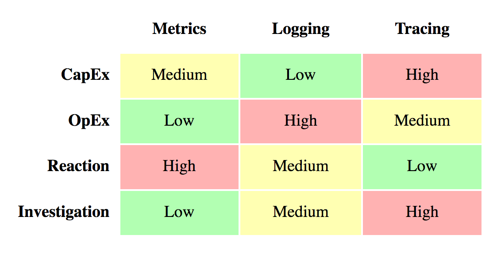 Go for Industrial Programming by Peter BourgonNot a silver-bullet
but:
- Easy to setup
- Immediately value
Suprisengly: the last one implemented
Centralized Logging
- Usually much too late
- Post-mortem
- Hard to find the needle
- Like a debugging vs testing
Monitoring
- Numbers
- Trends
- Dependencies
- + Actions
Metric
| Name | Label | Value |
|---|---|---|
| traefik_requests_total | code="200", method="GET" | 3001 |
Monitoring
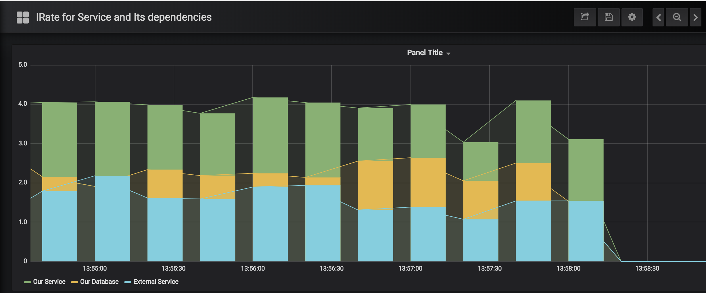Demo app
Monitoring
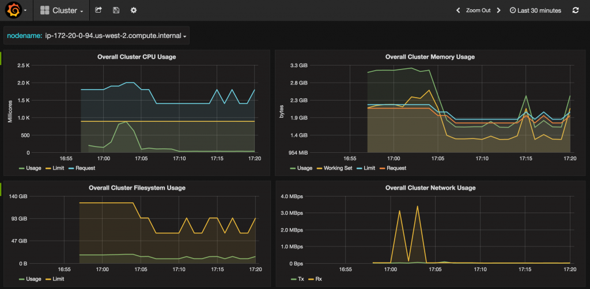Example from couchbase blog
How to find the right metric?
How to find the right metric?
- USE
- RED
Prometheus
What prometheus is?
- Aggregation of time-series data
- Not an event-based system
Prometheus stack
- Prometheus - collect
- Alertmanager - alerts
- Grafana - visualize
Cloud-native projects integration
 - --web.metrics.prometheus
- --web.metrics.prometheus
Prometheus + Java
Grafana
Prometheus
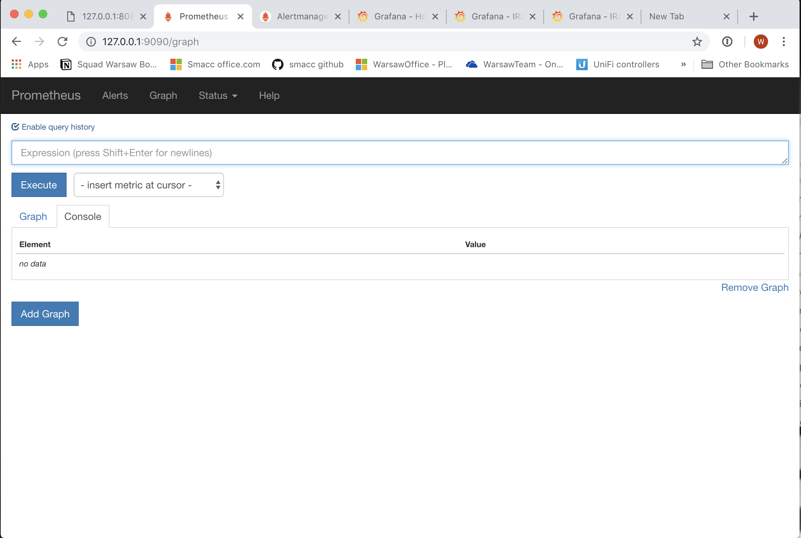Prometheus
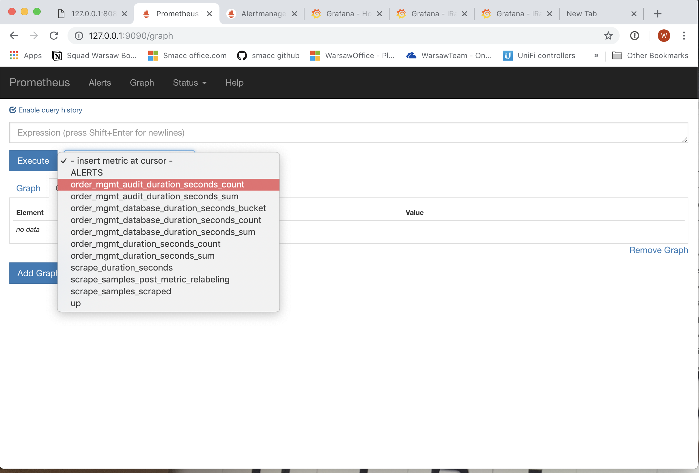Prometheus
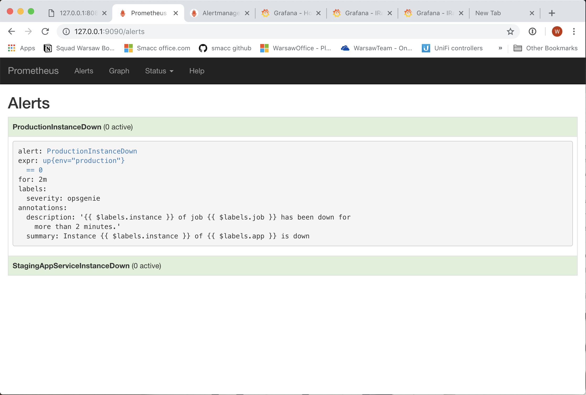Prometheus
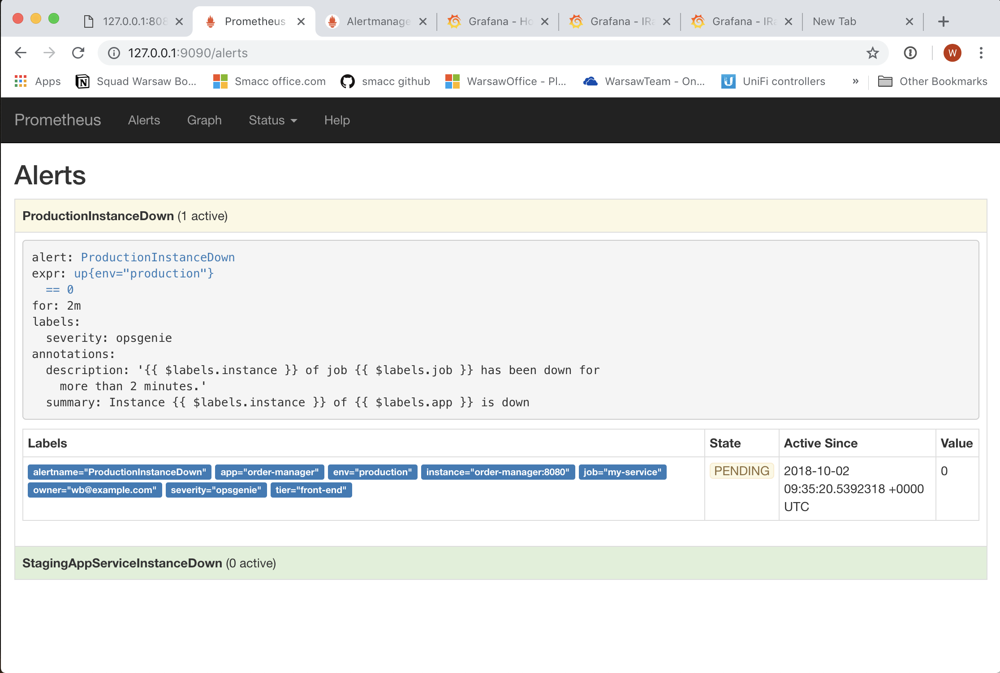Prometheus
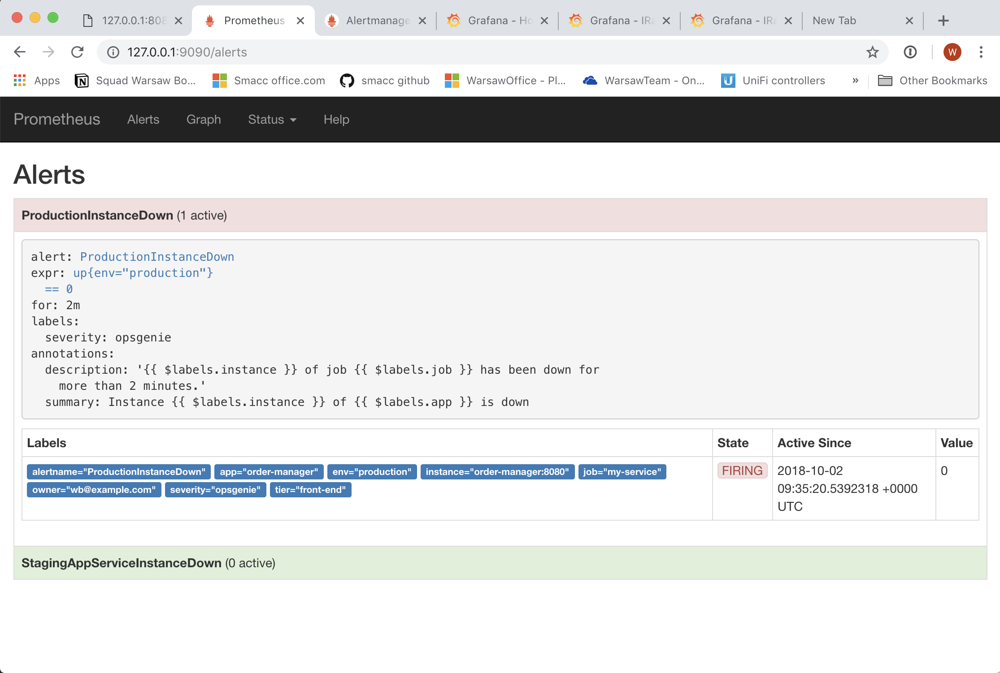Alertmanager
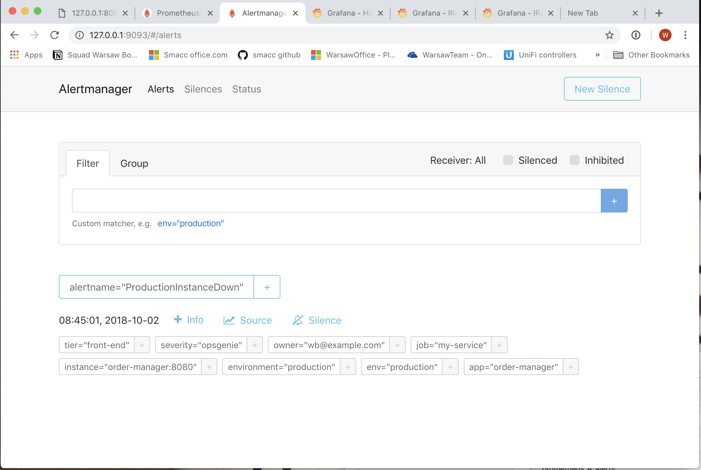Grafana
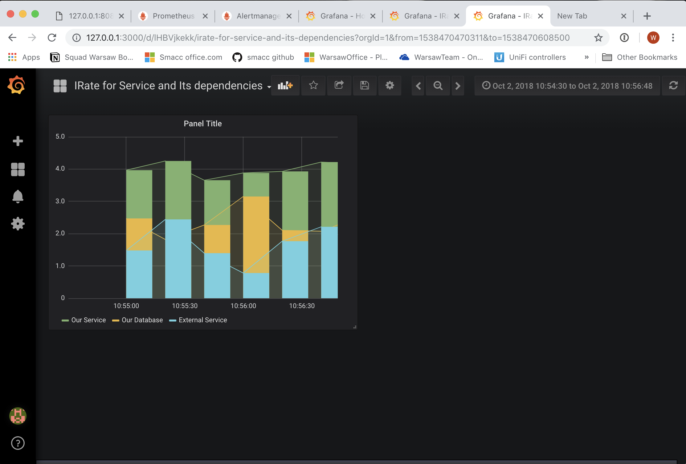Grafana
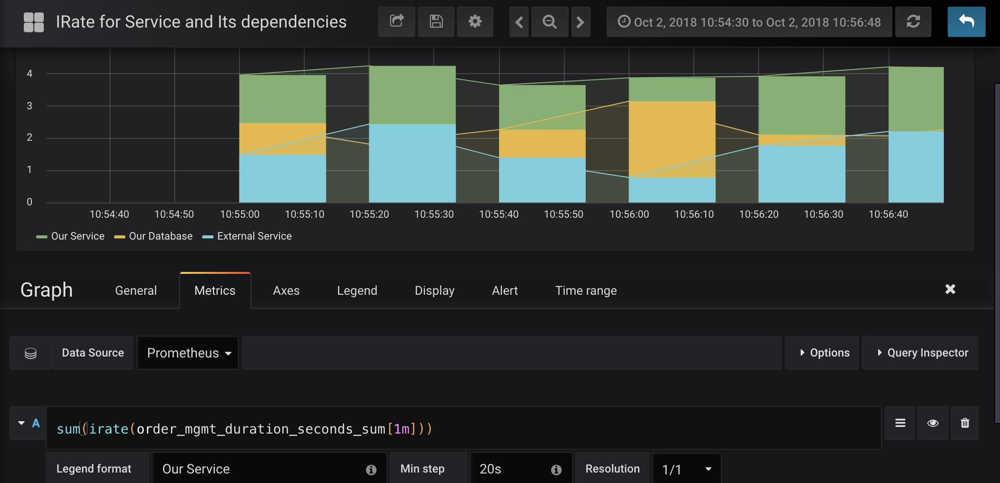Github

Best practises
- Start simple (up/down), later add more complex rules
- Sum over Summaries with Q leads to incorrect results, see prom docs
Summary
- Monitoring saves your time
- Checking logs Kibana vs Grafana is like debuging vs having tests
- Logging -> high TCO
Summary
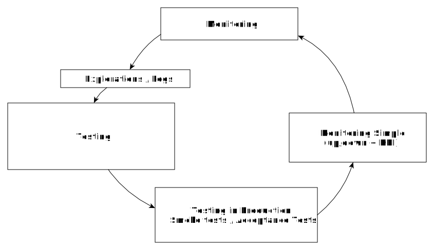Thank you
Questions?
ps. We are hiring.

Backup Slides
Promethus - labels in alert rules
The labels are propageted to alert rules:ALERT ProductionAppServiceInstanceDown
IF up { environment = "production", app =~ ".+"} == 0
FOR 4m
ANNOTATIONS {
summary = "Instance of {{$labels.app}} is down",
description = " Instance {{$labels.instance}} of app {{$labels.app}} has been down for more than 4 minutes"
}AlertManger - labels in AlertManger
Call somebody if the label isseverity=page:
---
group_by: [cluster]
# If an alert isn't caught by a route, send it to the pager.
receiver: team-pager
routes:
- match:
severity: page
receiver: team-pager
receivers:
- name: team-pager
opsgenie_configs:
- api_key: $API_KEY
teams: example_teamPrometheus + K8S = <3
Labels are propagated from k8s to prometheus
Integration with Prometheus
cat memcached-0-service.yaml---
apiVersion: v1
kind: Service
metadata:
name: memcached-0
labels:
app: memcached
kubernetes.io/name: "memcached"
role: shard-0
annotations:
prometheus.io/scrape: "true"
prometheus.io/scheme: "http"
prometheus.io/path: "metrics"
prometheus.io/port: "9150"
spec:
type: NodePort
ports:
- port: 11211
targetPort: 11211
selector:
app: memcached
role: shard-0